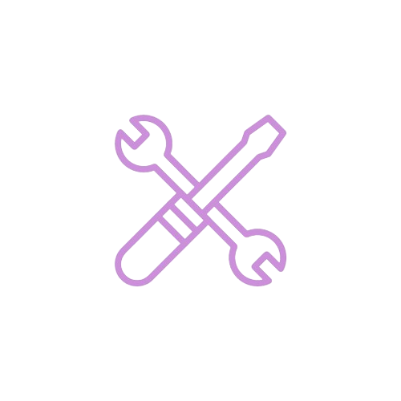
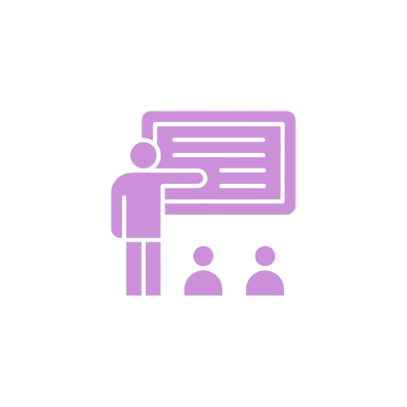

Venda seus Produtos
Plataforma para empreendedores locais divulgarem seus produtos e alcançarem novos clientes.
Ver maisVagas de Emprego
Confira as oportunidades de emprego disponíveis na sua região e candidate-se.
Ver vagas

Trabalho Freelancer
Encontre trabalhos freelancer e oportunidades de projetos para trabalhar de forma independente.
Ver oportunidades

Capacitação Profissional
Participe de programas de capacitação para desenvolver suas habilidades e avançar na carreira.
ParticiparFerramentas de Busca
Utilize ferramentas avançadas de busca para encontrar empregos por setor, habilidades e localização.
Buscar agoraDicas para Entrevistas
Aprenda como se preparar para entrevistas de emprego e aumentar suas chances de sucesso.
Saiba mais